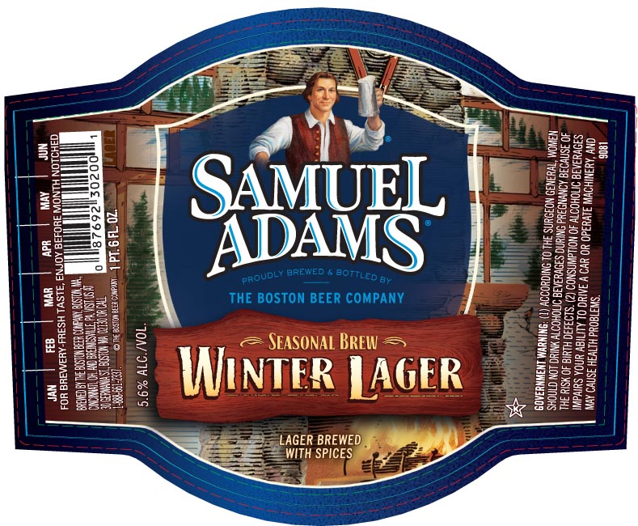

Bold and rich, with a touch of holiday spice. The first thing one notices about a Samuel Adams® Winter Lager is the deep ruby color. Then comes the magical aroma which promises something special on the tongue. The cinnamon, ginger, and hint of citrus from the orange peel blend with the roasty sweetness of the malts to deliver a warming, spicy flavor. On the palate Samuel Adams Winter Lager is rich and full bodied, robust and warming, a wonderful way to enjoy the cold evenings that come with the season.